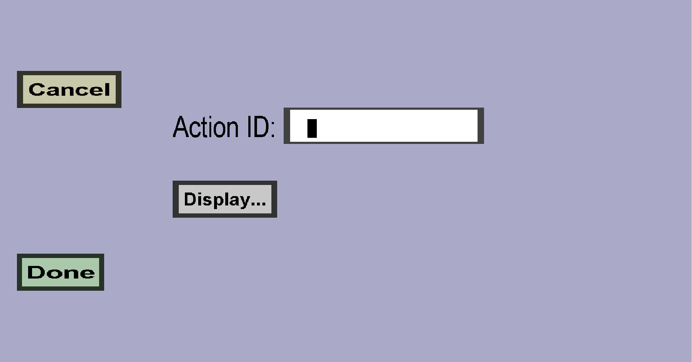

The script slot menu can be used to create script slots. Script slots will fire events
when they are clicked. If you use the Skript or Denizen plug-in, you can listen for these
events. Alternatively, you can write your own minecraft plug-in that can listen for it.
Scripting slots are useless for you if you can't write scripts or plug-ins.
This menu should look like this:

Properties
Action ID
The Action ID distinguishes this event/action from other events. You should typically give
every script slot a distinct Action ID. When you use Skript or Denizen, the Action ID also determines
how you should listen for this action/event.
Display
The Display determines what the slot looks like. For instance, you could create a custom item
with a 'button texture' and display that.
Skript usage
Listening
To listen for the event, use on kci container action "ActionID":
The double quotes are required and you should replace ActionID with the right action ID.
Expressions
-
event-player: yields the player that clicked on the slot
-
event-inventory: yields the inventory of the custom container
-
event-item: yields the item stack on the cursor of the player who clicked
-
event-clicktype: yields the click-type of the event
-
crafting progress of event-kcicontainer: yields the crafting progress (in ticks) of the container
recipe that is currently in progress, or 0 if no container recipe is in progress
-
fuel "fuel_slot_name" of event-kcicontainer: yields the item stack that is currently stored in
the fuel slot with name fuel_slot_name
-
burn time of fuel "fuel_slot_name" of event-kcicontainer: yields the remaining time (in ticks) until
the fuel slot with name fuel_slot_name stops burning, or 0 if the slot is currently not burning
-
input "input_slot_name" of event-kcicontainer: yields the item stack that is currently stored in
the input slot with name input_slot_name
-
output "output_slot_name" of event-kcicontainer: yields the item stack that is currently stored in
the output slot with name output_slot_name
-
storage storage_slot_index of event-kcicontainer: yields the item stack that is currently stored
in the storage slot with index storage_slot_index: the storage_slot_index must be an integer
that is at least 0 and smaller than the number of storage slots of the container
-
stored experience of event-kcicontainer: yields the amount of experience that is currently stored
in the custom container, which will be claimed whenever a player clicks on an output slot
Effects
-
set fuel "fuel_slot_name" of event-kcicontainer to new_fuel_item: Puts the item stack
new_fuel_item in the fuel slot named fuel_slot_name
-
set burn time of fuel "fuel_slot_name" of event-kcicontainer to new_burn_time: Lets the fuel
slot named fuel_slot_name burn for new_burn_time ticks, without needing any fuel
-
set input "input_slot_name" of event-kcicontainer to new_input_item: Puts the item stack
new_input_item in the input slot named input_slot_name
-
set output "output_slot_name" of event-kcicontainer to new_output_item: Puts the item stack
new_output_item in the output slot named output_slot_name
-
set storage storage_slot_index of event-kcicontainer to new_storage_item: Puts the item stack
new_storage_item in the storage slot with index storage_slot_index, where
storage_slot_index is an integer that is at least 0 and smaller than the total number of storage
slots of the container
-
set stored experience of event-kcicontainer to new_amount: Stores new_amount
experience in the custom container, which will be given to the next player who clicks on an
output slot
-
switch container of event-player to "other_container_name": Lets the player close this
custom container and open the custom container with name other_container_name. This
is basically the same as what a link slot does, and carries the same
restrictions (e.g. the containers must have the same hosts).
Denizen usage
Listening
To listen for the event, use on kci container action action_id:, where action_id
is the Action ID of this slot.
Context properties
- context.cursor_item: The item stack on the cursor of the player who clicked the action slot
- context.click_type: The name of the click type
- context.is_shift_click: Whether the player was holding shift while clicking the action slot
- context.container_name: The name of the custom container whose action slot was clicked
- context.container_inventory: The inventory of the clicked custom container
-
context.inputs: A MapTag that maps the names of all input slots to the item stacks stored
in each input slot
-
context.inputs(input_slot_name): The item stack that is stored in the input slot
named input_slot_name
-
context.outputs: A MapTag that maps the names of all output slots to the item stacks stored
in each output slot
-
context.outputs(output_slot_name): The item stack that is stored in the output slot
named output_slot_name
-
context.fuel: A MapTag that maps the names of all fuel slots to the item stack stored
in each fuel slot
-
context.fuel(fuel_slot_name): The item stack that is stored in the fuel slot
named fuel_slot_name
- context.storage: A ListTag containing the contents of all storage slots
-
context.storage(storage_slot_index): The item stack that is stored in the storage slot
with index storage_slot_index, where storage_slot_index is an integer that is
at least 0 and smaller than the number of storage slots of the container
-
context.fuel_burn_times: A MapTag that maps each fuel slot name of the container to its
remaining burn time (in ticks), or 0 for each fuel slot that is not burning
-
context.fuel_burn_time(fuel_slot_name): The remaining burn time of the fuel slot named
fuel_slot_name, or 0 if the slot is not burning
-
context.crafting_progress: The progress of the current container recipe (in ticks),
or 0 if no container recipe is currently in progress
-
context.stored_experience: The amount of experience that is currently stored in the
custom container, which players can claim by clicking on an output slot
Context determinations
Note: the action IDs and slot names of custom containers are case sensitive, but Denizen seems to
automatically convert your determinations to lowercase (probably because Denizen scripts are not meant to be
case sensitive). If you would like to manipulate your container slots via Denizen, I recommend using only lowercase
characters for your action IDs and slot names.
-
determine inputs.input_slot_name:itemstack: Put itemstack in the input slot named
input_slot_name
-
determine outputs.output_slot_name:itemstack: Put itemstack in the output slot named
output_slot_name
-
determine fuel.fuel_slot_name:itemstack: Put itemstack in the fuel slot named
fuel_slot_name
-
determine storage.storage_slot_index:itemstack: Put itemstack in the storage slot
with index storage_slot_index, where storage_slot_index is an integer that is at
least 0 and smaller than the number of storage slots of the custom container
-
determine fuel_burn_time.fuel_slot_name:duration: Lets the fuel slot named
fuel_slot_name burn for duration ticks, which does not consume or require
any fuel item stacks
-
determine switch_container:new_container_name: Lets the player close this
custom container and open the custom container with name new_container_name. This
is basically the same as what a link slot does, and carries the same
restrictions (e.g. the containers must have the same hosts).
Java usage
Listening
To listen for the Bukkit/Java event, you need to create a plug-in that listens for the
nl.knokko.customitems.plugin.events.CustomContainerActionEvent event. To import
this, you will need to add CustomItems.jar to your classpath.
Properties
actionID: The Action ID of the clicked action slot. If you have multiple action slots, you
should compare this with the Action ID of the slot you are interested it.
container: The ContainerInstance of the custom container whose slot was clicked.
You can call its methods to query and/or modify the state of the custom container. You can use
your tab completions to discover the possibilities.
clickEvent: The InventoryClickEvent that caused this event. You can use this event to
query the cursor item or the click type.
itemSet: The ItemSetWrapper of your item set. You can use this to query your own
item set. Also check out its get() method, which you can use to query even more data.